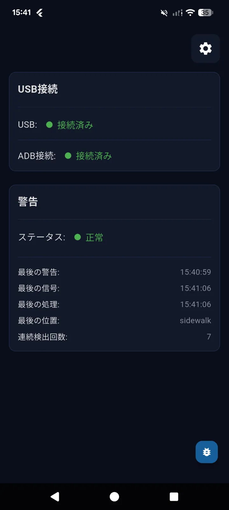
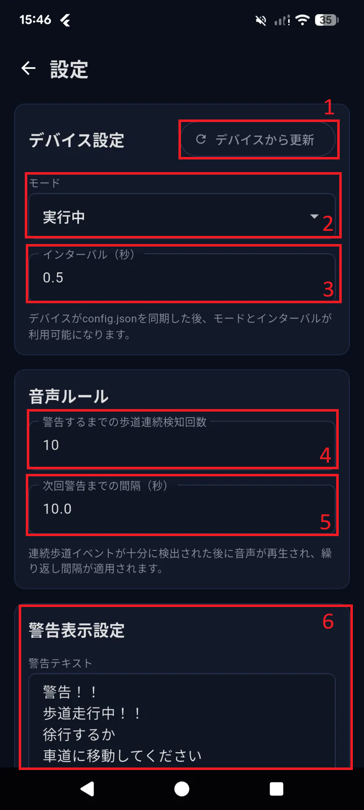
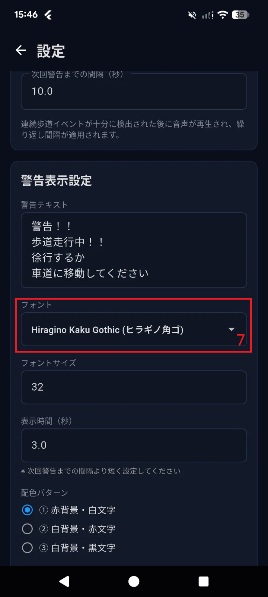

UI Design
Connection and Location Status
{kind=link}

Number |
Desciption |
Value |
|---|---|---|
1 |
Physical USB Connection status |
|
2 |
ADB Connecttion status |
|
3 |
Location status |
Status: Log ghi nhận ``Thông báo gần nhất ``: Thời điểm gần nhất điện thoại phát âm thông báo `` Tín hiệu gần nhất``: Lần cuối cùng nhận thông tin vị trí xe đạp `` Xử lý gần nhất``: Thời điểm xử lý thông tin vị trí xe đạp (gần với thời điểm `` Vị trí cuối cùng``: Vị trí cuối cùng của xe đạp được ghi nhận `` Số lần đi trên vỉa hè liên tục``: Số lần phát hiện xe đang di chuyển trên vỉa hè liên tiếp. Giá trị reset về |
Configuration
{kind=link}

{kind=link}


Number |
Desciption |
Value |
|---|---|---|
1 |
Pull file config của AI Unit về lần đầu tiên. Sử dụng khi muốn biết config hiện tại trên AI Unit |
Thông tin trả về sẽ được cập nhật tại mục 2 và 3. |
2 |
Chọn mode hoạt động cho AI Unit |
|
3 |
Cài đặt thời gian giữa 2 lần phát hiện vị trí xe đạp liên tiếp. |
Unit: Min: 0.2 |
4 |
Số lần phát hiện xe đang di chuyển lên vỉa hè liên tiếp sẽ được phát cảnh báo |
Datatype: Unit: |
5 |
Thời gian giữa 2 lần phát âm cảnh báo liên tiếp. Thời gian này phải lớn hơn giá trị mục |
Unit: |
6 |
Nội dung cảnh báo hiển thị trên màn hình điện thoại |
Nội dung dạng text, tùy người dùng nhập vào Limit: 30 kí tự fullwitdh |
7 |
Điều chỉnh font chữ cho text cảnh báo |
Nhập liệu dạng lựa chọn. Các font đang support: MS Gothic (ＭＳ ゴシック) MS Mincho (ＭＳ 明朝) Meiryo (メイリオ) Yu Gothic (遊ゴシック) Yu Mincho (遊明朝) Hiragino Kaku Gothic (ヒラギノ角ゴ) |
8 |
Điều chỉnh size text thông báo |
Nhập liệu dạng điền thông tin |
9 |
Thời gian hiển thị text thông báo |
Unit: |
10 |
Thay đổi màu phông chữ |
Nhập liệu dạng lựa chọn |
11 |
Text thông báo demo |
Hình ảnh demo |
12 |
Lưu thông tin, ứng dụng điện thoại sẽ apply toàn bộ setting |
Error Notification